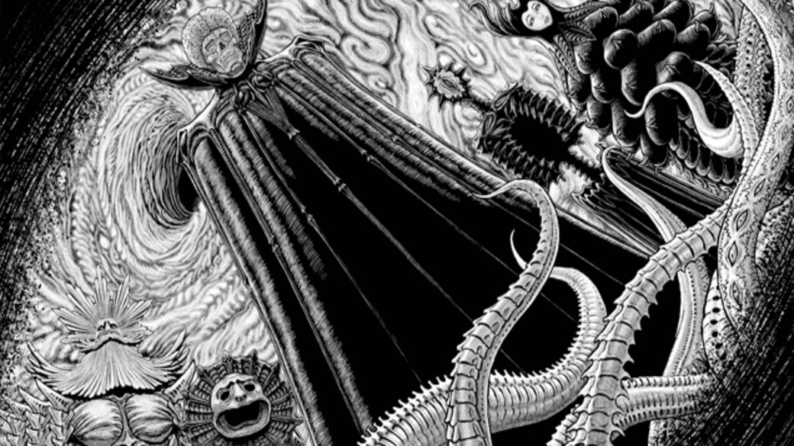

¿Quienes son "La Mano de Dios"?
El grupo más misterioso de Berserk queda expuesto en el siguiente post, no te lo pierdas

Hablar de la mano de dios es complicado porque pese a que la historia en la que se desarrollan los sucesos tiene más o menos unos 30 años de haber comenzado muy poco se ha dicho de estos personajes al punto de que a la fecha no se sabe a ciencia cierta cuáles son sus intenciones, lo más cercano que existe a un origen lo encontramos en el episodio 53 del manga titulado Thousand-Year Fiefdom donde la princesa Charlotte cuenta la historia del Emperador Gaiseric quien fue el único líder capaz de conquistar y unificar el continente entero provocando que el hambre, la muerte y las enfermedades que la guerra entre países vecinos ocasionaba en dicho continente cesaran por completo, todo eso en una sola generación, de su origen y el cómo se creó su ejército no existen registros ya que los únicos documentos que hablan de él son posteriores a la época en que apareció en el campo de batalla, en dichos escritos se cuenta sobre cómo él nunca mostraba piedad por sus enemigos llegando a recibir el nombre de “El rey demonio” o “Soberano de la muerte” pero no era solo por ser un sanguinario que recibió ese apodo sino también por la costumbre que tenía de salir a pelear usando un casco con forma de calavera y boom! ahí es cuando nos damos cuenta que muy probablemente estamos hablando de Skull Knight ya que hasta sus espadas son similares sin mencionar que la reacción de Guts al escuchar esto es de “haa no mams son el mismo”.
Pero la historia sigue, porque resulta que Gaiseric luego de unificar el continente decide reclutar hombres de diferentes naciones para construir la capital de su nuevo imperio justo en medio del continente, a esta tierra la nombró «Midland», pero su proyecto era demasiado costoso así que pronto se quedó sin fondos por lo que hizo lo que cualquier gobernante latinoamericano haría…
Cobrar impuestos por cualquier estupidez, el emperador literalmente comenzó a exprimir al pueblo con la firme intención de financiar su pendejada, cualquiera que sepa de economía básica entenderá que esto es muy grave ya que al no poder cubrir sus necesidades mínimas, la plebe comenzaba a recurrir a actos deleznables para poder sobrevivir o simplemente a buscar refugio en los vicios con el fin de evadir su realidad, Dios no vio con buenos ojos lo que el rey calavera había ocasionado así que envió a 4 o 5 de sus ángeles (realmente no se especifica la cantidad) para borrar esa ciudad en una sola noche, Charlotte termina el relato diciendo que hay quien dice que los vestigios de esa ciudad siguen reposando en el fondo de la brecha debajo de la Torre del Renacimiento, un lugar donde no llegan los rayos del sol ni sopla el viento.
Como bien podrán intuir esos ángeles que se mencionan no pueden ser otros que la mano de dios, esto recuerda mucho a los personajes de la película Hellraizer los Cenobitas, un grupo de seres que al presentarse mencionan que a lo largo del tiempo la humanidad les ha llamado ángeles o demonios, ellos existen con el fin llevar a los límites del placer y el dolor a quien logre abrir La Caja de Lemarchand, ya que este artefacto abre una brecha en el espacio por el que estos seres pueden pasar.
Os dejamos con un video explicativo que desentraña la antigua mano de dios: